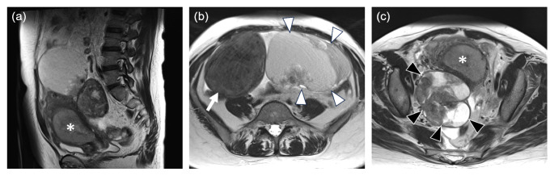

Ficha del catálogo
Carcinoma de endometrio
- Sistema
- Reproductor
- Modalidad
- RM
- Región
- Útero y pelvis
- Dificultad
- Avanzado
Es el tumor maligno más frecuente del cuerpo uterino y se origina en el epitelio endometrial. Su manifestación característica es el sangrado posmenopáusico, lo que favorece un diagnóstico en estadios iniciales. La resonancia se emplea para valorar la profundidad de invasión del miometrio y la extensión al cuello y a la pelvis, datos que orientan la extensión de la cirugía.
Técnica
El ultrasonido transvaginal es la primera prueba ante el sangrado posmenopáusico y mide el grosor endometrial. La confirmación es histológica mediante biopsia o legrado. La resonancia pélvica con secuencias potenciadas en T2 de alta resolución perpendiculares al eje del útero, difusión y estudio dinámico tras contraste es la técnica de referencia para la valoración local.
Qué observar
- Engrosamiento endometrial y su medida en corte sagital
- Masa endometrial de señal intermedia que restringe la difusión
- Integridad de la banda de unión entre endometrio y miometrio
- Profundidad de la invasión del miometrio respecto a su espesor total
- Extensión al estroma cervical y al segmento uterino inferior
- Adenopatías pélvicas y lumboaórticas y afectación anexial
Hallazgos
En resonancia el tumor se muestra como una masa endometrial de señal intermedia en las secuencias potenciadas en T2, que restringe la difusión y realza menos que el miometrio adyacente en la fase precoz del estudio dinámico. La interrupción de la banda de unión y la extensión del tejido tumoral dentro del miometrio permiten estimar si la invasión supera la mitad del espesor. La afectación del estroma cervical se reconoce por la pérdida del anillo fibroso de baja señal.
Perlas
La fase precoz del estudio dinámico es la que mejor separa el tumor del miometrio sano, porque el miometrio interno realza de forma intensa y el tumor queda hipointenso frente a él. Cuando el estudio dinámico no está disponible o es de mala calidad, la difusión aporta una información complementaria muy valiosa sobre el frente de invasión.
Diagnóstico diferencial
- Hiperplasia endometrial
- Da engrosamiento difuso sin masa focal, sin restricción marcada y con banda de unión conservada.
- Pólipo endometrial
- Es una lesión focal con pedículo vascular único que no invade el miometrio.
- Mioma submucoso degenerado
- Nace del miometrio, tiene bordes definidos y muestra señal baja en T2 salvo en zonas de degeneración.
- Adenocarcinoma de cuello uterino con extensión al cuerpo
- El epicentro de la masa está en el cuello y el endometrio se afecta de forma secundaria.
Simuladores
- Adenomiosis que borra la banda de unión y dificulta medir la invasión
- Contracción uterina transitoria que simula una masa
- Restos hemáticos intracavitarios en el estudio posbiopsia
Por modalidad
- RM
- Es la referencia para valorar la profundidad de invasión miometrial, la extensión cervical y la afectación ganglionar.
- US
- Es la exploración inicial ante sangrado posmenopáusico, mide el endometrio y orienta la indicación de biopsia.
Protocolo
Resonancia pélvica con secuencias potenciadas en T2 de alta resolución en el plano perpendicular al eje largo del útero, difusión con mapa de coeficiente aparente y estudio dinámico tras contraste con adquisición precoz. Conviene un antiespasmódico para reducir el movimiento intestinal y ayuno breve. El informe debe indicar la profundidad de invasión, el estado del estroma cervical y la presencia de adenopatías.
Clasificación
La estadificación sigue el sistema de la federación internacional de ginecología y obstetricia, que distingue la enfermedad limitada al cuerpo uterino según la profundidad de invasión del miometrio, la extensión al estroma cervical, la diseminación local y regional con afectación anexial, vaginal o ganglionar, y la enfermedad a distancia. La resonancia contribuye sobre todo a separar la invasión superficial de la profunda.
Errores frecuentes
- Medir la invasión sobre un plano no perpendicular al eje del útero
- Confundir la pérdida de la banda de unión por adenomiosis con invasión tumoral
- Realizar el estudio inmediatamente después de la biopsia y valorar cambios inflamatorios como tumor

carcinoma de endometrio sangrado posmenopáusico invasión miometrial banda de unión resonancia pélvica estadificación difusión